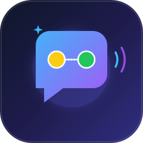

TalKIA
open-engine v2.0
Comunicación Aumentativa y Alternativa · Principio LAMP
📍 Escenario:
🌐 General
🏠 Casa
🎒 Escuela
🚶 Calle
🏥 Salud
🎨 Fitzgerald
🌿 Sensorial Calmo
⚡ Modo Online
¡Hola! ¿Cómo estás?
⌫ Deshacer
↺ Limpiar
🔊 Hablar
👋
Saludo
💧
Necesidades
💛
Emociones
🛎️
Asistencia
💬
Conversación
Preguntas · Afirmación · Libre
✨
Despedida
Sub-modo de Diálogo:
❓ Pregunta
💡 Afirmación
↩️ Respuesta
🌐 Tópico Libre
Vocabulario Núcleo Fijo (Core LAMP)
Posiciones inmutables para memoria motora
Vocabulario Contextual (Fringe Dinámico)
Confianza: 92%